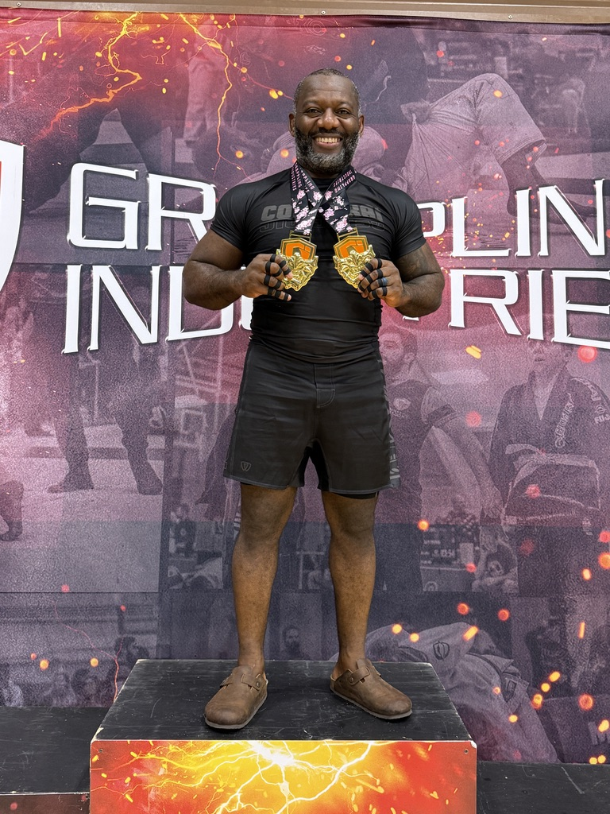

Translating complex cyber risk into business strategy
Enterprise cybersecurity and Governance, Risk & Compliance leader with 15+ years of global experience building governance strategies, strengthening enterprise risk management and enabling growth across cloud technology, telecommunications, defence, pharmaceutical, engineering and critical infrastructure.
Currently Principal Information Security GRC Leader at Cloudflare, advising strategic customers and partnering with engineering, legal, privacy, product and executive leadership to strengthen governance, security and regulatory compliance. A 2026 publication is planned: Automating Business Information Systems for Audit Compliance in Cloud-Native Organizations.
Proxim Advisory
Proxim Advisory is my brainchild — an independent advisory practice built on a simple conviction: security governance works best when it sits close to the business it protects. Proximity to the decision, proximity to the risk, proximity to the people who own the outcome.
Board & executive advisory
Turning regulatory and cyber risk into decisions leadership can act on, in language the board already speaks.
Governance by design
ISO 27001, SOC 2, NIST and GDPR programs designed to scale with cloud-native engineering, not slow it down.
Assurance & AI governance
Third-party risk, audit readiness and emerging AI governance frameworks built for evidence and automation.
Professional experience
Cloudflare
Strategic governance leadership for enterprise security initiatives and executive customer engagements. Previously Senior Manager, Security Assurance. Selected twice to represent Cloudflare at Gartner Executive Summits, moderating discussions on innovation, business agility and "Zero Trust as a Culture, Not Just a Control."
VMware
Governance frameworks and control assurance across a global cloud technology estate.
Vodafone
Technical security and privacy auditing across telecommunications infrastructure.
GlaxoSmithKline · BAE Systems Applied Intelligence · Balfour Beatty · British Army
Pharmaceutical, defence, engineering and critical infrastructure environments — including team lead responsibility in the British Army.
Education
- Doctorate in Business Administration (DBA) — Management Information Systems & ERP
- MSc — Security Management
- LL.B (Hons) — Bachelor of Laws
Certifications
Brazilian jiu-jitsu
The mats are where the rest of my thinking gets sharpened. Brazilian jiu-jitsu is my main hobby and my most honest teacher: it rewards patience over force, position over panic, and a plan that survives contact with a resisting opponent.
It maps almost perfectly onto security leadership — control the position before you chase the submission, manage risk rather than eliminate it, and stay calm under pressure. Training keeps me curious, humble and consistent, and it is the discipline I bring back to every boardroom.

Position before submission
Fix the fundamentals before chasing the flashy outcome.
Pressure, not panic
Composure is a leadership skill you can train.
Every round is feedback
Losing well is the fastest way to get better.
Let's talk
Available for executive advisory, governance program leadership and speaking engagements. Scan the code or use the details below.